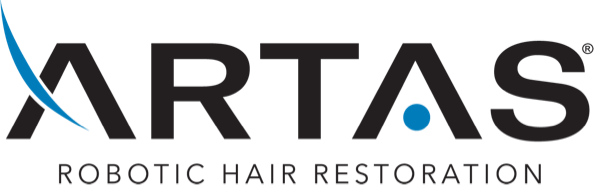

Ecommerce & Digital Experience
Shopify Plus, Magento, checkout, subscriptions, and conversion. Make the shopping experience work better.
ECOMMERCE & BUSINESS TECHNOLOGY
I help growing companies fix, connect, and improve their ecommerce and business systems. Strategy and hands-on execution, from the same person.
WHAT I HELP WITH
Shopify Plus, Magento, checkout, subscriptions, and conversion. Make the shopping experience work better.
Connect your storefront, ERP, marketing, and support. Untangle the gaps that slow everyone down.
GA4, funnel analysis, reporting, and experiments. Turn scattered data into useful decisions.
Platform decisions, vendor coordination, practical AI, and automation. A roadmap—and someone to move it forward.
SELECTED EXPERIENCE
Platform migrations, integrations, and improvements across the ecommerce stack.
From acquisition and checkout to subscriptions, support, and fulfillment.
Clearer priorities, better visibility, and less friction between business and technical teams.
BRANDS I’VE WORKED WITH
Across in-house roles and independent projects.

ABOUT
I started in design and development, then moved through ecommerce, marketing, analytics, and technology leadership. I understand how the pieces fit—and where they tend to break.
I work best with growing teams that need someone to connect the dots, set priorities, and get things moving.
COMMON QUESTIONS
I help companies evaluate, improve, and connect the technology behind ecommerce—from storefront and checkout through ERP, subscriptions, marketing, analytics, support, fulfillment, and internal operations.
Yes. Engagements can start with an existing stack, team, and agency ecosystem. I can diagnose problems, define priorities, lead projects, work directly in the technology, or coordinate the specialists already involved.
Yes. Much of my work sits between business stakeholders, internal technical teams, SaaS vendors, developers, and agencies. I can lead the work or fill the gaps between those groups.
Yes. I work with measurement and analytics, operational reporting, workflow automation, and practical AI applications where they can reduce manual work or improve decision-making.
Yes. I can support focused projects, ongoing consulting, or broader fractional technology and ecommerce leadership depending on the problem and the team.
LET'S TALK
Tell me what you're trying to accomplish and where you're getting stuck.
A good place to start
What are you trying to accomplish?
Where are things getting stuck?